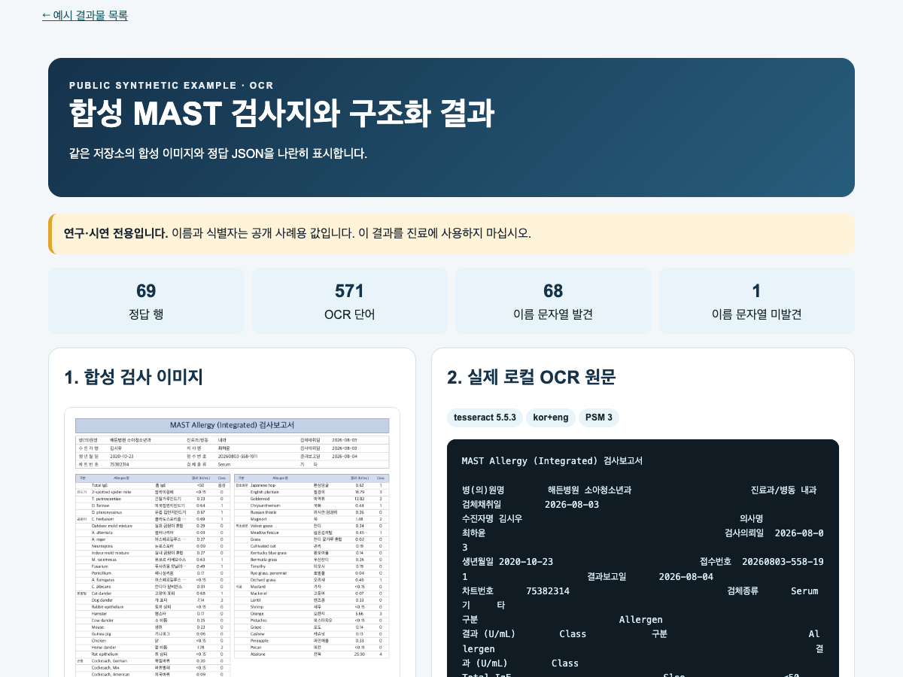
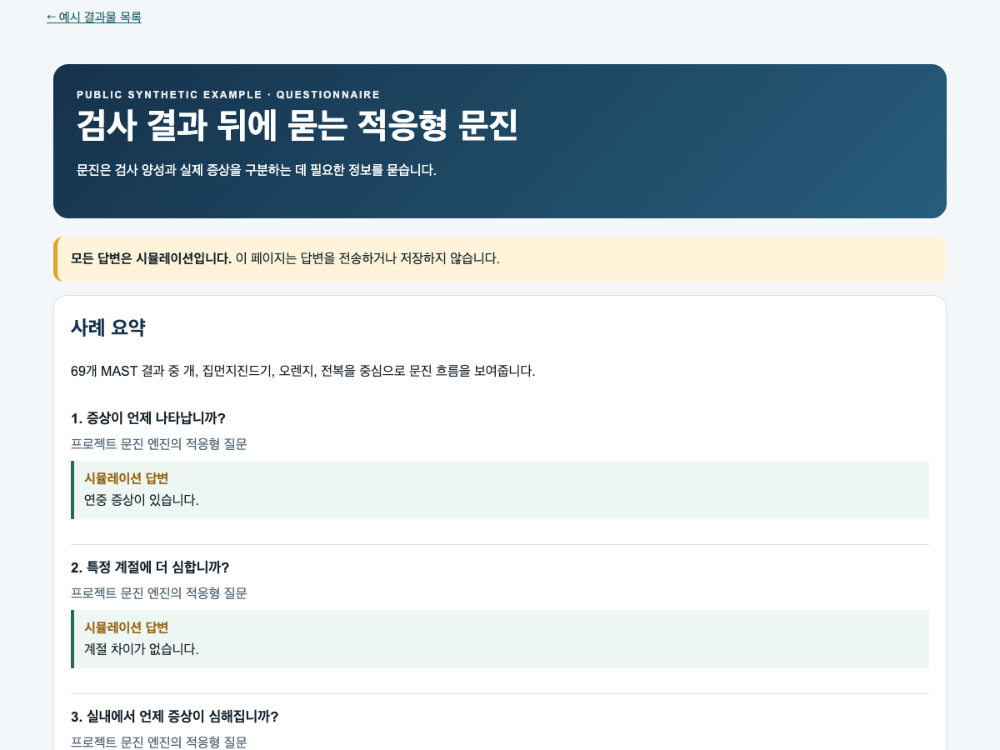
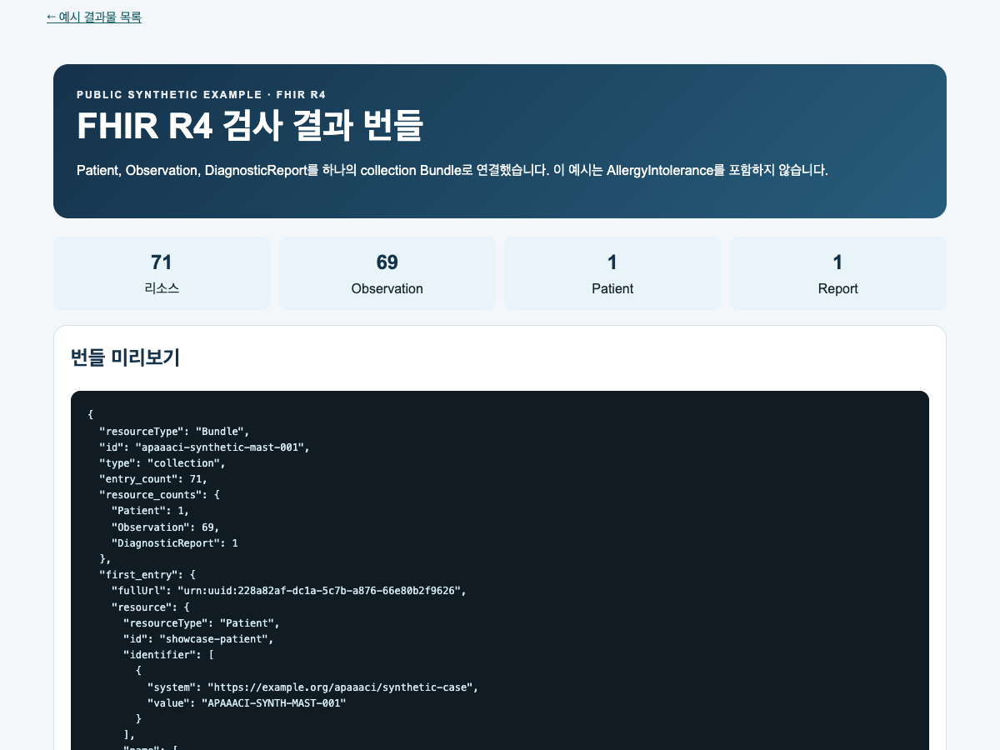

이미지에 머무는 결과
검사 결과는 종이 또는 이미지로 전달됩니다. 검색, 교환, 재사용이 어렵습니다.
연구 프로토타입 · 합성 공개 예시
MAST·피부단자검사 결과에서 항목을 추출하고, 증상 문진과 검토 가능한 지식 근거를 거쳐 환자 안내와 HL7 FHIR 초안을 함께 만듭니다.
연구 범위 공개 예시는 모두 합성 자료입니다. 이 프로토타입은 의료진의 진단이나 최종 승인을 대신하지 않습니다.
연구 배경
검사 결과는 종이 또는 이미지로 전달됩니다. 검색, 교환, 재사용이 어렵습니다.
양성 수치는 감작을 뜻합니다. 실제 증상, 노출, 계절성 문진이 함께 필요합니다.
모델은 양성을 놓치거나 값을 잘못 읽을 수 있습니다. 이중 판독, 규칙 검사, 사람 확인이 필요합니다.
전체 처리 흐름
아래 단계를 선택하면 입력, 안전장치, 출력의 연결을 확인할 수 있습니다.
공개 전시에서는 실제 환자 자료 대신 합성 MAST 결과지를 사용합니다. 운영 환경에서는 식별정보 처리와 접근 통제가 별도로 필요합니다.
구분해서 읽는 연구 근거
합성 벤치마크, 이름을 마스킹한 연구 평가용 페이지, 생성 결과물 집계는 서로 다른 질문에 답합니다.
01 · 합성 벤치마크
합성 결과지에서 모델별 양성 누락률을 비교했습니다.
02 · 연구 평가용 페이지
이름을 마스킹한 검사 결과지 29페이지, 7개 양식에서 같은 양성 항목을 비교했습니다.
03 · 생성 결과물
29개 사례에서 만든 문진, 환자용 설명, 카드뉴스, FHIR 기록의 합계입니다.
연구 수치는 제34회 개신의학학술대회와 AAAAI 2027 제출용 초록을 기준으로 합니다. 아래 합성 사례는 공개 시연을 위해 만들었습니다. 포스터 이미지 보기 ↗
연결 결과물
검사지부터 FHIR 파일까지 같은 가상 환자의 자료입니다. 각 파일을 열거나 내려받을 수 있습니다. 예시 생성 기록(JSON) ↓
 PNG
PNG

HTML + JSON
HTML + JSON HTML
HTML
 14 CARDS
14 CARDS

FHIR JSON06 · 표준화
가상 환자 1명, 검사 항목 69개, 검사 보고서 1개를 연결했습니다. 번들 안의 참조 139개가 모두 연결됩니다.
연구 개발 순서
기술 성능과 임상 효과는 같은 질문이 아닙니다. 각 단계의 근거와 다음 과제를 구분합니다.
검사 입력에서 문진, 환자 안내, 카드뉴스, FHIR 출력까지 연결했습니다.
21개 합성 결과지의 6개 모델과 이름을 마스킹한 검사 결과지 29페이지의 두 모델을 평가했습니다.
반복 오류 4종을 교정하고 174개 번들을 공식 Validator로 확인했습니다.
승인된 연구 절차에서 사용성, 이해도, 안전성, 임상 운영 적합성을 확인해야 합니다.
구현 범위
현재 공개 범위는 합성 자료의 입력, 변환, 설명, 다운로드입니다. 병원 운영에는 별도 승인과 시스템 연계가 필요합니다.
연구 프로토타입